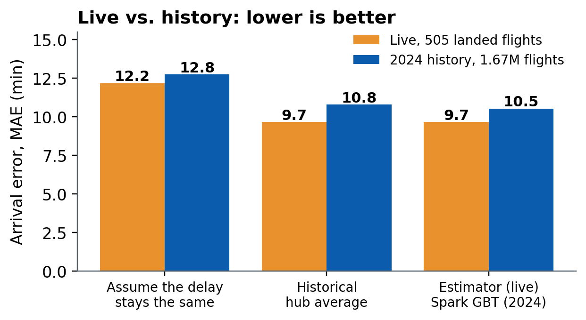
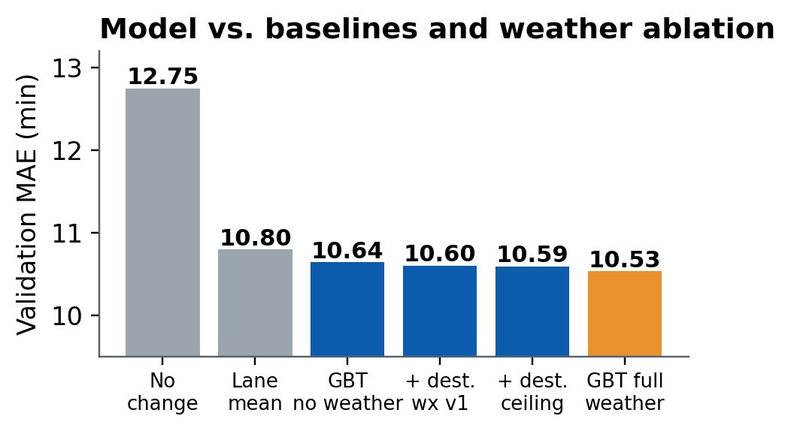
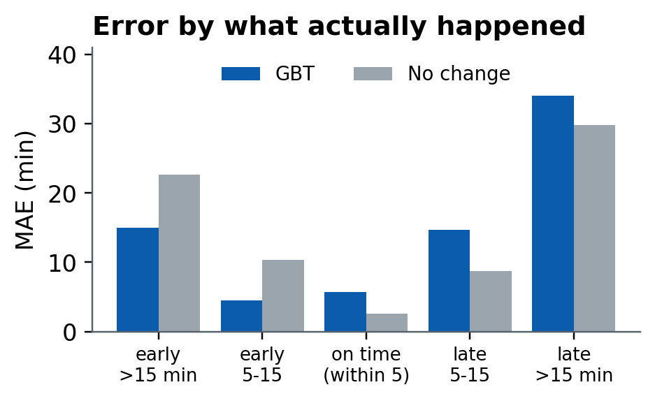
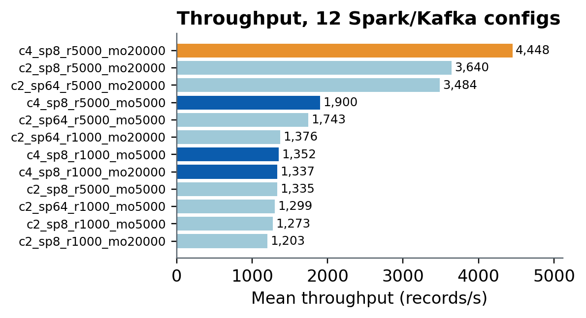

Live and historical data in one pipeline: today’s hub conditions compared with a typical day for that hub.
Status apps show only now; delay statistics only the past. We join both and state where the model fails.
Late departures often arrive less late: 77% of live flights made up time. Better pickups and connections.
| Flight-status apps | Delay-statistics sites | HyperLogistics-Stream | |
|---|---|---|---|
| Uses live data now | yes | no | yes |
| Uses years of history | rarely | yes | yes (8M flights) |
| Compares today with a typical day | no | no | yes, per hub, hour, weekday |
| Estimates arrival from delay and weather | airline estimate | no | yes, 14 inputs |
| Open, tested, states its limits | no | partly | 60+ tests, limits listed |


GBT beats both baselines on 2024. Weather adds about 1%; lane and schedule matter most.

Wins on early flights, loses to “no change” on on-time and late ones. Not a severe-delay alarm.

4,448 records/s best (orange); 4 cores (dark) beat 2 by ~22%. Provisional: 4 batches per config.